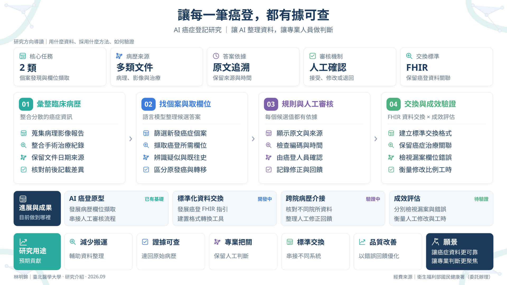

讓每一筆癌登，都有據可查
研究摘要 / Abstract
一位癌症病人的登記資料，往往散落在病理報告、影像報告、手術與治療紀錄之中，同一個欄位還可能出現前後不一致的記載。癌登人員必須逐份翻閱、比對日期與來源，才能決定哪一筆才適用。這項工作耗時，整理可供核對的依據也需要人力。
我們以院內病歷為資料來源，先找出可能需要登記的新發個案，再擷取各欄位。大型語言模型負責提出候選值，並標示原文出處，同時處理否定、疑似、既往病史、家族史與原發或轉移的關係。系統再依癌別、時間與編碼版本進行規則檢核，最後由癌登人員接受、修改或退回。
驗證上，我們分別檢視個案漏案、欄位正確性、來源可追溯程度、人工修改比例與處理時間，而不是只看單一準確率。另一方面，團隊也在發展癌登資料的標準化交換格式與轉換工具，讓個案、原發癌、分期與治療之間的關聯在跨院傳遞時仍然正確。目標是減少資料搬運，把時間留給專業判斷。


內容依據：2026-09｜以人工智慧輔助程式導入癌症登記辦理現況；2026-09-01｜AI 癌登計畫一小時辦理現況報告 v6